Core Widgets
This section describes common widgets or components used throughout the application.
Download
The Download widget allows users to export the processed signal data with.
{kind=link}
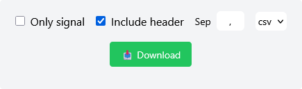
Options
Signal values only (checkbox): If checked, only the signal values are included (timestamps excluded). Default: Unchecked.
Include header (checkbox): Adds a header row with column names. Default: Checked.
Separator (text input): Custom field separator for the output file.
Validation rules:
Must be a single character
Cannot be a dot (.)
Cannot be a number
File format (dropdown): Choose between .csv and .txt.
Download button
Chart
The Chart widget is a line chart that displays the signal in the time domain. The X-axis represents either:
Datetime values (if Unix timestamps are available)
Milliseconds from t=0 (if timestamps were generated automatically)
The Y-axis displays the amplitude of the signal in arbitrary units.
{kind=link}
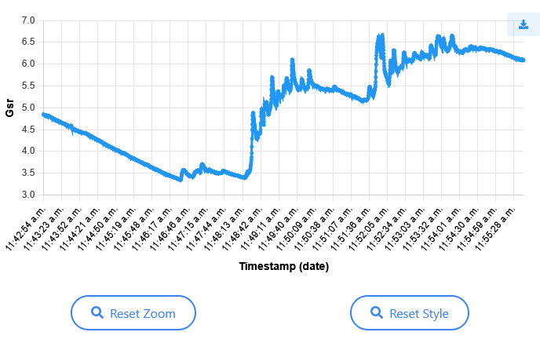
Features
Tooltip: When hovering over a point, a tooltip shows the time and value at that point.
Linked tooltip: If multiple charts are present on the page with signals of equal length, the tooltip will also appear on the other chart for comparison. This is not applied if the signal lengths differ (e.g. after resampling).
Click interaction: Clicking on a point zooms in and highlights it. If other chart with same signal length is present, it is also zoomed.
Mouse interactions:
Zoom with mouse wheel
Pan by clicking and dragging (only X axis)
Control buttons:
Reset Zoom: Restores the original zoom level
Reset Style: Removes any point highlights
Export: A button is provided to export the chart as a PNG image.
{kind=link}
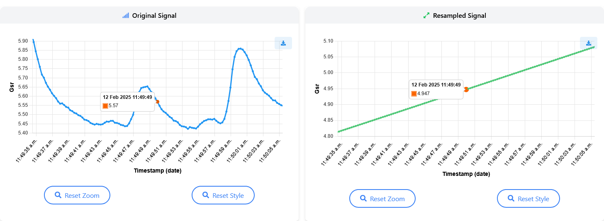
Example of a signal chart after clicking and while hovering over a point on the original signal plot.
Spectrum Chart
The Spectrum Chart displays the frequency-domain of the signal.
The X-axis shows frequencies (in Hz), and the Y-axis shows the corresponding amplitudes, obtained from a Fourier Transform.
{kind=link}
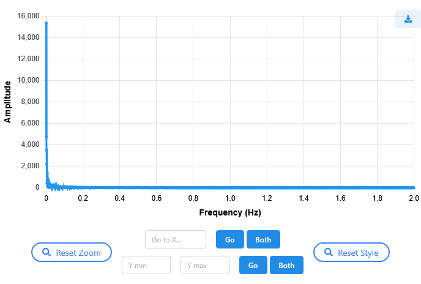
Features
Tooltip: Displays the frequency and amplitude at the hovered point. This tooltip is not synchronized with other charts.
Mouse interactions:
Zoom with the mouse wheel
Pan by clicking and dragging (only X axis)
Reset Zoom: Resets the zoom level
Reset Style: Clears any custom styling or range selection
Go to X: Input field and buttons:
Go: Zooms to the specified frequency value
Both: Applies the same zoom to the other chart if present
Y Min / Y Max: Allows specifying a Y-axis range
Go: Zooms to the specified Y-range, fading out the signal outside this range
Both: Applies the same Y-range filtering to the other chart if present
{kind=link}
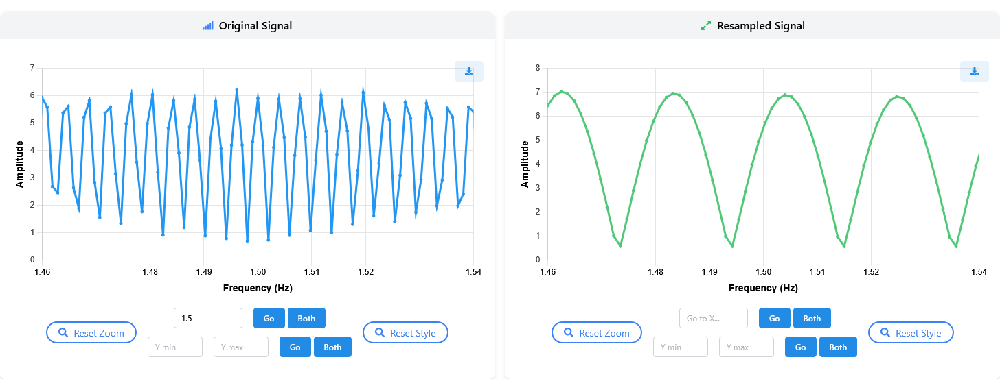
Example of a spectrum chart after going to X on both charts.
{kind=link}
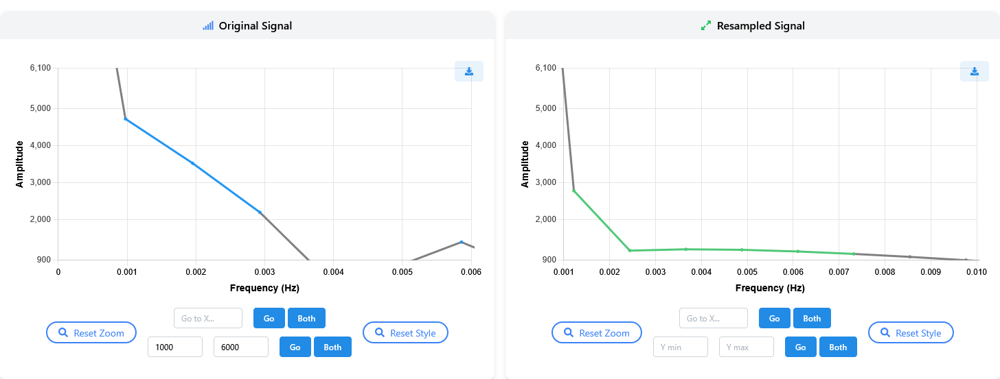
Example of a spectrum chart after going to Y range on both charts.
Comparison Charts
Signal Comparison
The signal comparison chart consists of overlaying the original and the processed signals on a single Chart, sharing the same X and Y axes.
{kind=link}
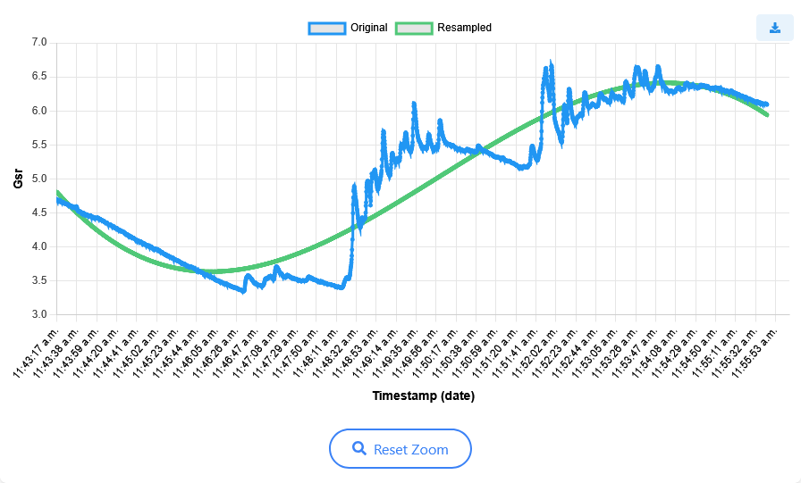
Features
Mouse interactions:
Zoom with the mouse wheel
Pan by clicking and dragging (only X axis)
Reset Zoom: Resets the zoom level
Legend: It is recommended to use the legend to show or hide each signal by clicking on its name.
Frequency Comparison
The frequency comparison chart overlays the frequency-domain of the original and the processed signals.
{kind=link}
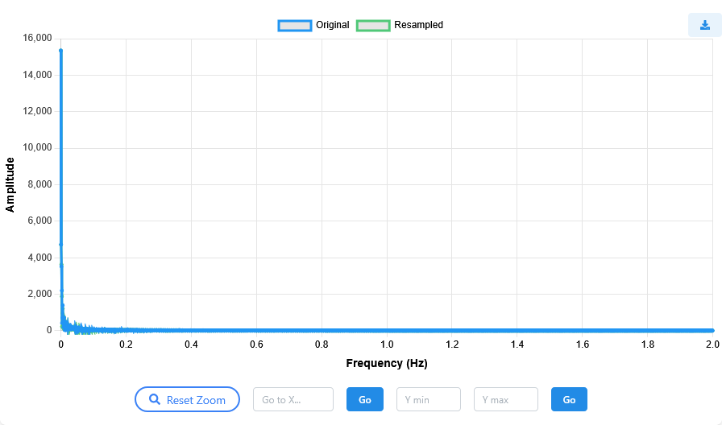
Features
Mouse interactions:
Zoom with the mouse wheel
Pan by clicking and dragging (only X axis)
Reset Zoom: Resets the zoom level
Go to X: Input field and button:
Go: Zooms to the specified frequency value
Y Min / Y Max: Allows specifying a Y-axis range
Go: Zooms to the specified Y-range, fading out the signal outside this range
Legend: It is recommended to use the legend to show or hide each signal by clicking on its name.
{kind=link}
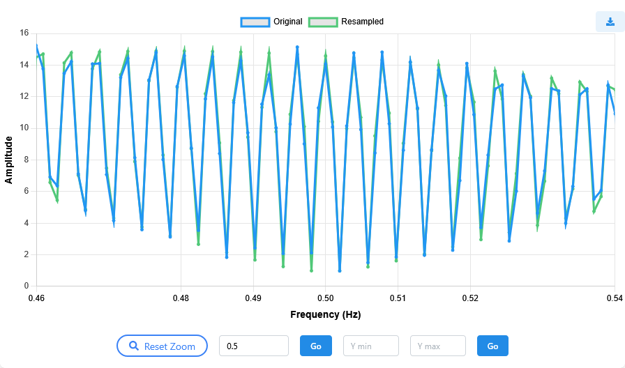
Example of a spectrum chart after going to X.
{kind=link}
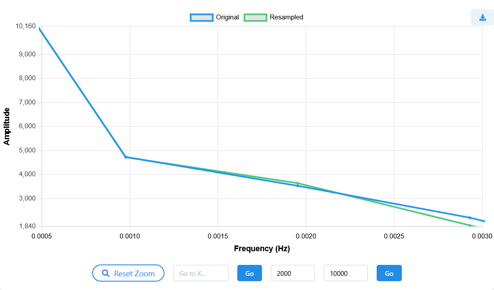
Example of a spectrum chart after going to Y range.
Metrics
The Metrics component displays several computed values for the signal, each presented as an individual card. These metrics are only available for EDA and PPG signal types.
Each card represents a single scientific metric, extracted from signal processing literature.
{kind=link}
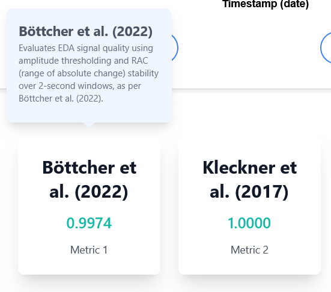
Features
Scientific reference: Each metric includes a citation to the original publication where it was proposed.
Interactive cards: Clicking on a metric card opens a small popover containing an intuition about how the metric works.